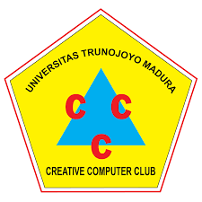
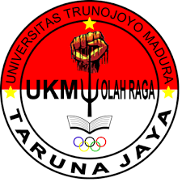
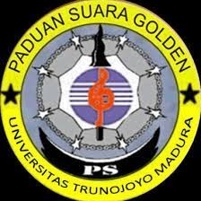
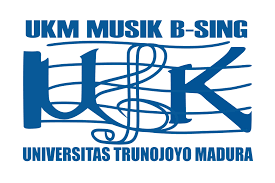
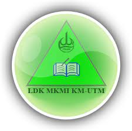
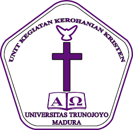

1. Creative Computer Club (Triple C) |
Keterangan : Creative Computer Club (Triple C) adalah UKM Universitas Trunojoyo Madura bergerak di bidang komputer dan teknologi. Organisasi ini didirikan pada Tanggal 26 April 1999, dimana kampus ini masih bernama Universitas Bangkalan. Secara umum, UKM Triple C memiliki fungsi yaitu sebagai wadah gerak mahasiswa Universitas Trunojoyo Madura di bidang informasi dan teknologi khususnya Computer. |
|  |
2. Taruna Jaya |
Keterangan UKM Olahraga Taruna Jaya merupakan unit kegiatan mahasiswa di Universitas Trunojoyo Madura Madura yang bergerak dalam pengembangan minat dan bakat mahasiswa dibidang olahraga di tingkat universitas yang biasanya lebih dikenal dengan nama TJ. UKM Olahraga Taruna Jaya berdiri pada tanggal 09 Agustus 2001. UKM Olahraga Taruna Jaya mempunyai peranan yang sangat penting dalam memajukan Olahraga terutama atlit-atlit olahraga. Dalam UKM Olahraga Taruna Jaya terdapat tujuh devisi yakni devisi sepak bola/futsal, bola basket, bola volley, badminton, tenis meja, bela diri dan keorganisasian. |
|  |
3. Paduan Suara Golden |
Keterangan : Paduan Suara Golden adalah unit kegiatan mahasiswa di tingkat universitas yang berfungsi sebagai wadah serta naungan bagi mahasiswa untuk mengapresiasikan dan menyalurkan minat dan bakat khususnya di bidang olah vokal atau menyanyi. UKM Paduan Suara Golden merupakan organisasi kemahasiswaan yang berada di lingkungan Universitas Trunojoyo Madura yang bergelut dalam seni paduan suara. UKM Paduan Suara Golden didirikan pada tanggal 13 Mei 2009, namun baru diresmikan pada hari Kamis, tanggal 5 November 2009 di ruang Auditorium Universitas Trunojoyo Madura. Paduan Suara Golden terdiri dari empat divisi yaitu divisi kaderisasi, divisi pelatihan, divisi kegiatan, divisi humas. Sejauh ini, UKM Paduan Suara Golden telah banyak mengikuti event walaupun masih dalam ruang lingkup kampus mengingat usia berdirinya yang masih tergolong muda. |
|  |
4. Musik B-Sing |
Keterangan : UKM MUSIK B-SING merupakan sebuah unit kegiatan mahasiswa (UKM) di tingkatan universitas yang bergerak di bidang musik yang berdiri pada tanggal 8 Oktober 1996 yang pada waktu itu masih bernama UKM Musik KESORKESAN dan baru berganti nama menjadi UKM Musik B-SING pada tahun 2003. Sebagai UKM yang bergerak di bidang musik, UKM Musik B-Sing memegang amanah penting untuk ikut serta memajukan iklim bermusik dan berorganisasi di lingkungan kampus Universitas Trunojoyo Madura. |
|  |
5. Lembaga Dakwah Kampus Majelis Kajian Mahasiswan Islam (LDK-MKMI) |
Keterangan : LDK-MKMI (Lembaga Dakwah Kampus Majelis Kajian Mahasiswa Islam) adalah salah satu Unit Kegiatan Mahasiswa (UKM) di Universitas Trunojoyo Madura yang sebelumnya bernama UKKI (Unit Kegiatan Kerohanian Islam). Seperti namanya, LDK-MKMI bertugas untuk mewadahi minat dan bakat mahasiswa di bidang agama Islam, mulai dari qiro'ah, kaligrafi, nasyid Islami. Dan juga merupakan wadah bagi para mahasiswa untuk memperdalam dan mempertajam pengetahuan keislamannya. |
|  |
6. Unit Kegiatan Kerohanian Kristen (UK3) |
Keterangan : UKM UK3 adalah Unit kegiatan mahasiswa yang menaungi mahasiswa kristen di Universitas Trunojoyo Madura. di UKM para mahasiswa memiliki Tujuan yang sama yaitu Kristus. UKM UK3 membantu setiap mahasiswa untuk memenuhi kebutuhan rohani dan berorganisasi. Upaya tersebut dilakukan sebagai pembentukan karakter dan pembelakan dalam mengahadapi kehidupan baik didalam maupun di luar kampus. Namun Secara umum UKM UK3 sebagai wadah gerak mahasiswa dalam bidang Kerohanian. |
|  |